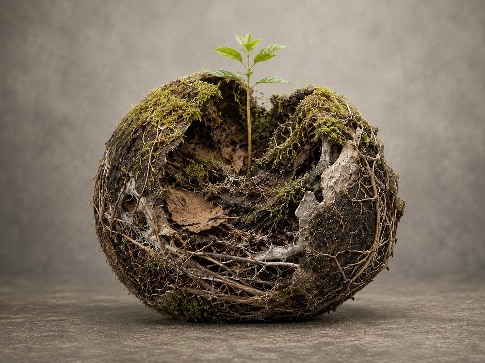

Inicio > Notas críticas > Desde Quisquiza (11 de 20)
Desde Quisquiza (11 de 20)
Sucesión
Los bosques no se saltan pasos
Esta nota forma parte de una serie escrita desde Quisquiza, en los Andes colombianos, donde territorio y trabajo intelectual ya no están separados. Examina cómo ese cruce transforma mi manera de pensar la memoria, la información y las estructuras que las sostienen. Consulte todas las notas en el índice de esta sección.
En las zonas de bosque en restauración de mi terreno, la recuperación es desigual.
Un parche ya está repleto de pastos, helechos, pequeños arbustos y plantas cuyos nombres aún desconozco (¿los aprenderé algún día?). A pocos metros, el suelo permanece expuesto y áspero, endurecido por años de ganado, lluvia, ganado, abandono y más ganado. En otros lugares, el pasto kikuyu lo ha invadido todo con la confianza de un imperio que nunca ha encontrado una oposición significativa.
(Estoy trabajando en la oposición. Pero las revoluciones están tan infravaloradas hoy en día...).
Desde la distancia, las zonas en recuperación pueden parecer bastante verdes. Ese es uno de los peligros de observar desde lejos. "Verde" no es lo mismo que "restaurado". Una ladera cubierta por un solo pasto agresivo puede parecer más sana que un trozo de tierra desnuda, pero aún así puede ser biológicamente pobre, estructuralmente simple y sorprendentemente resistente a cualquier cosa que intente llegar después.
El bosque no se recupera simplemente porque haya vuelto el color.
Con algo de suerte, empiezan a aparecer plantitas entre los pastos. Luego helechos. Después arbustos bajos. A veces, una fresa silvestre se abre paso, extendiéndose cerca del suelo y produciendo diminutos frutos rojos casi imposibles de encontrar antes de que lo hagan los pájaros.
(Me encantan las fresas silvestres. También me encantan los pájaros. Sobre todo los polluelos de turpial. Así que, en este punto, "tengo el coraón partío").
No son plantas impresionantes, al menos no en el sentido arquitectónico. No forman doseles. No estabilizan una ladera entera con raíces profundas. No anuncian el renacimiento del bosque andino con una voz digna de la banda sonora de un documental de David Attenborough.
Simplemente llegan. En silencio, como siempre lo hacen los campesinos colombianos. Y, al llegar, empiezan a transformar el lugar.
Sus raíces aflojan pequeñas porciones de tierra. Sus hojas amortiguan el impacto de la lluvia. Los tallos muertos y el follaje caído añaden finas capas de materia orgánica. Los insectos las visitan: muchos, de todo tipo. Los hongos establecen relaciones íntimas bajo tierra. La humedad se conserva un poco más de tiempo bajo la vegetación. Las temperaturas fluctúan un poco menos. Las semillas que se habrían secado en suelo expuesto ahora encuentran sombra, refugio y algo parecido a una invitación formal para unirse a la fiesta.
Entonces, otras plantas se hacen posibles. Y quizás más fauna.
(¿Más turpiales bebé? Ojalá.)
Así funciona la sucesión ecológica, aunque la palabra puede hacer que el proceso suene mucho más ordenado de lo que realmente es.
Porque no hay ningún comité que asigne la secuencia. Ningún helecho recibe autorización escrita para aparecer después del césped. Ningún arbusto espera pacientemente a que los musgos completen su informe trimestral. Las plantas llegan a través de semillas transportadas por el viento, el agua, el pelo, las plumas, las botas, el estiércol y el azar. Algunas germinan. La mayoría no (emoji de carita triste aquí). Algunas sobreviven una temporada y desaparecen. Otras alteran las condiciones lo suficiente como para que algo más exigente se establezca cerca.
El progreso es irregular, oportunista y está lleno de experimentos fallidos.
Una especie pionera suele describirse como el primer organismo capaz de colonizar un área alterada. Pero el término "primero" puede ser engañoso. Puede haber docenas de comienzos, cada uno operando a una escala diferente. Los líquenes alteran la piedra. Los musgos retienen agua. Las gramíneas sujetan el suelo suelto. Las otras hierbas aportan materia orgánica. Los arbustos dan sombra. Los hongos extienden redes a través de un sustrato que, visto desde arriba, parece vacío.
Ninguno de ellos es el bosque. Juntos, comienzan a producir las condiciones de las que eventualmente podría surgir un bosque.
Y ese punto es realmente importante. Mañana mismo podría plantar una especie forestal madura en la parte más dañada del terreno. Podría cavar un hoyo, añadir compost, colocar la plántula con cuidado, sujetarla con estacas, protegerla del viento, hablarle con palabras de aliento, tocarle lo mejor del rock argentino para animarla (buena música, créanme) y revisar sus hojas cada mañana con la ansiosa e histérica atención de alguien que ha depositado demasiadas esperanzas en un árbol diminuto.
Quizás sobreviva. Pero también podría morir en cuestión de semanas (infinitos emojis de caritas tristes).
El problema no sería necesariamente el árbol. El suelo podría estar demasiado compactado. El viento podría ser demasiado fuerte. La temperatura, demasiado inestable. La vegetación circundante, demasiado competitiva. Las relaciones microbianas que el árbol necesita podrían no existir aún. El agua podría escurrirse por la superficie en lugar de penetrar en el suelo, o acumularse alrededor de las raíces y permanecer allí hasta que se pudran.
(El rock argentino podría no haber sido el mejor. Y... sí, puese suceder).
El árbol podría formar parte del bosque del futuro y aun así ser imposible en el paisaje del presente.
La restauración me confronta repetidamente con esa realidad incómoda. Saber lo que debería existir eventualmente no significa que la tierra esté preparada para sustentarlo. Las etapas faltantes no se pueden reemplazar con una dosis de entusiasmo, grande o pequeña.
La sucesión secundaria comienza después de una perturbación en un lugar donde quedan rastros de suelo. Un pastizal, un campo abandonado, una zona quemada, una ladera despejada. La recuperación puede comenzar rápidamente, pero el retorno a la complejidad lleva tiempo, ya que cada etapa modifica las condiciones heredadas de la anterior.
La vegetación temprana capta la luz de forma agresiva y ocupa terreno abierto. A medida que las plantas crecen y mueren, el carbono se incorpora al suelo. Los sistemas radiculares crean conductos. Las comunidades de hongos se extienden. La sombra aumenta. La humedad se comporta de manera diferente. Las temperaturas extremas se suavizan cerca de la superficie. La hojarasca comienza a formar una nueva capa entre la atmósfera y el suelo mineral.
El entorno se vuelve gradualmente menos adecuado para algunas especies pioneras y más adecuado para especies que antes no habrían podido sobrevivir allí. Por lo tanto, la sucesión incluye reemplazo, competencia, fracaso y muerte. Las primeras plantas no se limitan a preparar el terreno y retirarse discretamente. Algunas se aferran, dominan, e impiden el desarrollo de etapas posteriores. Otras desaparecen porque las condiciones que ellas mismas ayudaron a crear ya no les son favorables.
La preparación ecológica no es benevolencia. Es consecuencia.
Aun así, la secuencia importa. Un bosque no se puede construir de la misma manera que se construyen los muebles. Los árboles del dosel, las plantas del sotobosque, los hongos, los insectos, las aves, los organismos del suelo, la humedad, la sombra y la descomposición no son componentes independientes que esperan ser colocados en su lugar correcto. Se hacen posibles a través de relaciones acumuladas a lo largo del tiempo.
Esto hace que la paciencia sea menos abstracta.
La reparación institucional suele comenzar con una imagen igualmente seductora del resultado final: un archivo inclusivo, una clasificación descolonizada, un catálogo multilingüe, un repositorio gestionado por la comunidad, una infraestructura digital resiliente, un sistema en el que la responsabilidad, el acceso, la autoridad y el cuidado se han redistribuido.
Sabemos cómo debería ser un bosque maduro, así que plantamos el árbol más grande que podemos permitirnos. Se instala una nueva plataforma, se anuncia una política (con mucho bombo y platillo), se reemplaza un vocabulario, se forma un comité (con mucho bombo y platillo... otra vez). Se digitaliza una colección. Una institución se declara transformada (con mucho bombo y platillo...).
Entonces, la plántula empieza a marchitarse. El personal no ha recibido la formación adecuada (¿les suena?). La financiación dura un año. La consulta comunitaria comienza después de que las decisiones ya se han tomado. La nueva terminología se basa en la misma estructura descriptiva que la anterior. La responsabilidad sigue concentrada en una persona exhausta. La plataforma requiere capacidades técnicas que la institución no posee. La política presupone confianza donde años de explotación han generado sospecha.
La sucesión institucional no significa aceptar la injusticia lentamente ni posponer el cambio urgente hasta que todos se sientan cómodos. Algunas estructuras nocivas deben ser detenidas de inmediato. Un terreno envenenado no necesita una apreciación paciente de su veneno.
Pero detener el daño y sostener la reparación son cosas bien distintas. La eliminación de una categoría opresiva no produce automáticamente un reemplazo adecuado. Abrir una colección no crea las relaciones necesarias para un acceso responsable. Transferir autoridad no funciona si a quienes la reciben se les niega tiempo, recursos, apoyo legal o el derecho a negarse. La participación no puede echar raíces en un terreno compactado por décadas de traición institucional.
Existen algunas etapas de reparación para preparar las condiciones para lo que aún no puede sobrevivir. Su labor es fácil de subestimar porque rara vez se asemeja a una transformación. Puede comenzar con el registro de los motivos de las decisiones, la distribución del conocimiento práctico para que la partida de una persona no lo borre, o permitir que los vocabularios locales permanezcan visibles en lugar de forzarlos a adoptar términos institucionales de inmediato. Un proyecto pequeño puede necesitar protección frente a la presión para expandirse antes de que la confianza, la competencia y la responsabilidad hayan tenido tiempo de arraigarse. Y donde las comunidades han visto su conocimiento recopilado, clasificado y exhibido sin una autoridad significativa, la preparación puede comenzar por reparar la relación misma. Nada de esto se parece a un sistema maduro. Es el terreno desde el cual tal sistema podría, eventualmente, ser posible.
Estas acciones no se parecen en nada a un bosque maduro.
Tampoco una planta de fresa. Sin embargo, la estructura posterior, todo lo que se viene, puede depender de ella.
La dificultad radica en que las instituciones prefieren la transformación visible. Las copas de los árboles se ven bien en las fotos. Las especies pioneras no. Un nuevo edificio, una nueva interfaz, un marco estratégico o una declaración pública pueden presentarse como evidencia de progreso. Los años dedicados a reconstruir el suelo, redistribuir el conocimiento práctico, documentar los fracasos y crear condiciones para la confianza son más difíciles de mostrar.
Incluso pueden ser tomados como demora. Pero los bosques saben distinguir entre demora y preparación.
Aquí arriba, en Quisquiza, las zonas en recuperación continúan a su propio ritmo irregular. Algunas áreas se espesan rápidamente. Otras permanecen estancadas bajo la hierba. Un arbusto aparece donde nadie lo esperaba. Una plántula cuidadosamente plantada muere en lo que yo consideraba el lugar perfecto. El musgo cubre una piedra. Los helechos se acumulan a lo largo de un borde húmedo. Un pájaro trae una semilla de algún lugar del bosque, allá adentro, más arriba en la montaña.
La secuencia no avanza de forma lineal. Se ramifica, se detiene, retrocede y vuelve a empezar.
Sin embargo, las condiciones cambian. Esta mañana, bajo un grupo de arbustos bajos, encontré un pequeño árbol que crecía sin tutores, protección ni ayuda mía. Aún no sé de qué especie se trata. Su tronco es delgado y dos de sus hojas ya han sido devoradas.
No es el bosque, todavía. Pero el suelo bajo él estaba lo suficientemente preparado para que comenzara a crecer.
La complejidad depende de la secuencia. No de la jerarquía. No de la obediencia. Depende del momento oportuno.
Los bosques no se saltan pasos. Hacen que el siguiente paso sea posible.